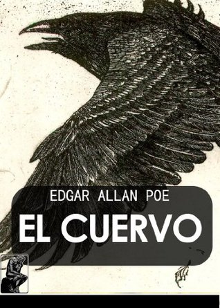
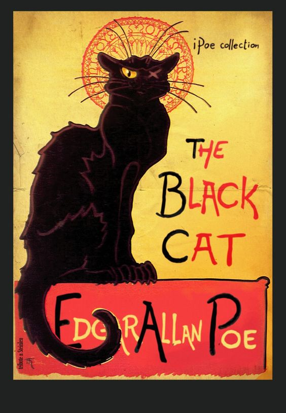
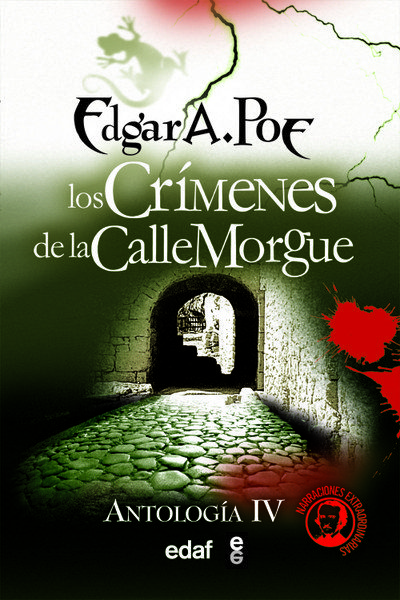

Edgar Allan Poe
OBRAS
Poe escribió cuentos de distintos géneros, poesía, crítica literaria y ensayo, éste sobre los temas más variados, además de una novela larga. A lo largo de toda su vida también escribió numerosas cartas.
  - Macabros
- Detectivescos
- De ciencia ficción
- Satíricos y poéticos
- Novela
- Poesía
- Ensayo
- Crítica
Los cuentos de terror o cuentos góticos constituyen su obra más conocida192 y propiamente genuina.193 Heredero directo de dicha corriente, según el estudioso Benjamin F. Fisher, Poe pretende, sin embargo, no tanto «helar la sangre» del lector («curdling the blood», expresión inglesa de la época) como compatibilizar lo gótico con la plausibilidad psicológica, logrando elevar el género a la categoría de gran arte.194 El bostoniano modifica el goticismo, además, restándole elementos sobrenaturales, como en su relato «El gato negro», en que el desencadenante del horror final es un gato vivo. Lo que traza de algún modo Poe en sus principales relatos es una suerte de «geografía de la imaginación». Entre los herederos directos del goticismo poeano, añade Fisher, se encuentran Edith Wharton, William Faulkner, Flannery O'Connor, Hart Crane, Stephen King, y muchos otros.
Poe igualmente dio origen al relato de detectives por medio de sus cuentos analíticos y de misterio: «La carta robada», «Los crímenes de la calle Morgue», «El escarabajo de oro» y «El misterio de Marie Rogêt», que influyeron de lleno en autores posteriores como Arthur Conan Doyle, cuyo Sherlock Holmes está inspirado directamente en el Auguste Dupin de Poe (vid. Legado e influencia).
El bostoniano dio asimismo un significativo impulso al género emergente de la ciencia ficción, respondiendo así a los recientes avances científicos y tecnológicos, como el globo aerostático, en su cuento «El camelo del globo». Aunque se ha dicho que Poe inventó el género, según John Tresch, en realidad lo que hizo fue «descubrirlo» en el seno de una tradición preexistente, reformándolo y adaptándolo a la retórica y las innovaciones técnicas de su tiempo.238 Por otra parte, sentó las bases para algunos de los modos y temas que adquirirían carta de naturaleza en la segunda mitad del siglo xx.
El escritor dedicó asimismo muchos relatos a la sátira, al humor e incluso la mistificación humorística (patraña). Para crear el efecto cómico, solía servirse de la ironía y la extravagancia absurda, en un intento de poner coto al conformismo ideológico del lector. Así, «Metzengerstein», su primer cuento publicado, y también su primera incursión en el terror, había sido concebido inicialmente como una sátira del género, ya se ha dicho que muy popular en la época.
Poe es autor de una única novela: La narración de Arthur Gordon Pym (The Narrative of Arthur Gordon Pym of Nantucket) (1838). Se trata de un relato de aventuras marineras de tipo episódico, centrado en su intrépido protagonista, quien encontraría eco posteriormente en las obras de Stevenson. El autor buscó sus fuentes principalmente en antiguas leyendas marineras. Debido a la abundancia de detalles macabros que contiene y a su indescifrable desenlace, la obra ha estado siempre rodeada de polémica. Esta novela fue muy valorada por los surrealistas, que destacaban en ella su maestría en la recreación de elementos inconscientes. Por este motivo también ha sido muy estudiada por el psicoanálisis. Julio Verne escribió una continuación: La esfinge de los hielos.
Probablemente, de no haber tenido que trabajar de periodista, Poe se habría dedicado en exclusiva a la poesía. «Razones al margen de mi voluntad me han impedido en todo momento esforzarme seriamente por algo que, en circunstancias más felices, hubiera sido mi terreno predilecto», manifestó en el prólogo a El cuervo y otros poemas. Este será su género más controvertido y el que le granjeará las peores críticas. Las épocas de creación poética más intensas se dieron al principio y al final de su carrera.
Poe ejerció el ensayo sobre los temas más variados: la larga meditación cosmológica «Eureka», los comentarios breves reunidos en Marginalia, y los trabajos monográficos «Criptografía», «Filosofía del moblaje», «Arabia pétrea», «El jugador de ajedrez de Maelzel», etc. Poe no pretende valerse de un método científico en este ensayo sino que escribe basándose en la más pura intuición. Por esta razón consideraba la pieza como una «obra de arte», no científica, insistiendo en que, a pesar de ello, su contenido era veraz y la juzgaba su obra maestra.
Poe vivió siempre aislado de las corrientes culturales dominantes en su país, y sin embargo se embarcó en una batalla crítica que le ocupó los últimos años de su vida. En esta faceta son destacables sus reseñas sobre Longfellow, Dickens y Hawthorne. Hoy es debatida su importancia como crítico. Mientras que Edmund Wilson opina que esta parte de su obra es el «conjunto crítico más notable producido en los Estados Unidos», otros estudiosos señalan su falta de valor.Poe no entraba nunca a juzgar las ideas expuestas en las obras, sus críticas eran literarias y sólo literarias, y excesivamente ácidas y despiadadas en ocasiones, según recuerda su amigo Lowell. W. H. Auden, sin embargo, afirmó del Poe crítico: «Nadie en su época puso tanta energía en el intento de lograr que sus contemporáneos poetas tomaran su oficio en serio».